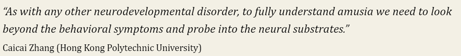
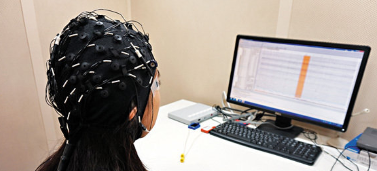
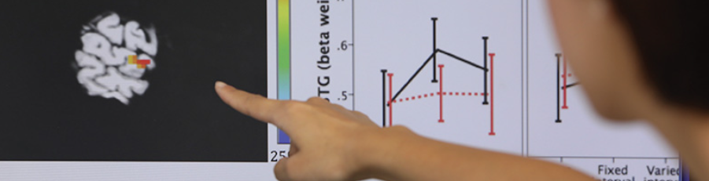

Collaboration and Outreach
Collaborators
On Second-language learning of speech prosody
- Qin, Z., Lee-Kim, S-I., & Qi, H. (in press). The effect of second-language learning experience on Korean listeners’ use of pitch cues in the perception of Cantonese tones. Second Language Research. Link [PDF, open access]
- Qin, Z., & Zhang, J. W. (in press). The role of coarticulatory tonal information in Cantonese spoken word recognition: an eye-tracking study. Linguistics Vanguard. Link [PDF, open access]
- Chui, Y., & Qin, Z. (in press). Distributional learning and overnight consolidation of non-native tonal contrasts by tonal language speakers. Journal of Speech, Language, and Hearing Research. Link [open access]
- Qin, Z., Jin, R., & Zhang, C. (2022). The effects of training variability and pitch aptitude on the overnight consolidation of lexical tones. Journal of Speech, Language, and Hearing Research, 65(9), 3377-3391. Link [PDF, open access]
- Qin, Z., & Zhang, J. W. (2022). The use of tonal coarticulation cues in Cantonese spoken word recognition. JASA Express Letters, 2, 035202. Link [PDF, open access]
- Qin, Z. (2022). The second-language productivity of two Mandarin tone sandhi patterns. Speech Communication, 138, 98-109. Link
- Qin, Z., Gong, M., & Zhang, C. (2021). Neural responses in novice learners’ perceptual learning and generalization of lexical tones: The effect of training variability. Brain and Language, 223, 105029. Link
- Qin, Z., Zhang, C., & Wang, W. S-Y. (2021). The effect of Mandarin listeners' musical and pitch aptitude on perceptual learning of Cantonese level-tones. Journal of the Acoustical Society of America, 149, 435-446. Link [PDF, copyright belongs to JASA]
- Qi, H., Qin, Z., & Yan, H. (2020). An empirical study on the productivity of Mandarin tone 3 sandhi by Korean-speaking learners of Chinese. Research on Chinese as a Second Language 对外汉语研究, 21, 168-176. [CSSCI Journal]
Media

[Jun 2023] Dr. Caicai Zhang’s MRI Study on Children’s Learning and Memory Patterns
UBSN Newsletter, PolyU[Oct 2021] Dr Zhang Caicai Selected as a Young Scientist to Join the 4th World Laureates Forum
Faculty of Humanities Newsletter, PolyU

[Feb 2021] Using Neuroscience to Challenge Our Eyes and Ears
Observer, Association for Psychological Science

[Jan 2019] 唱歌常走音 理大諗計醫
Wen Wei Po 文匯報
